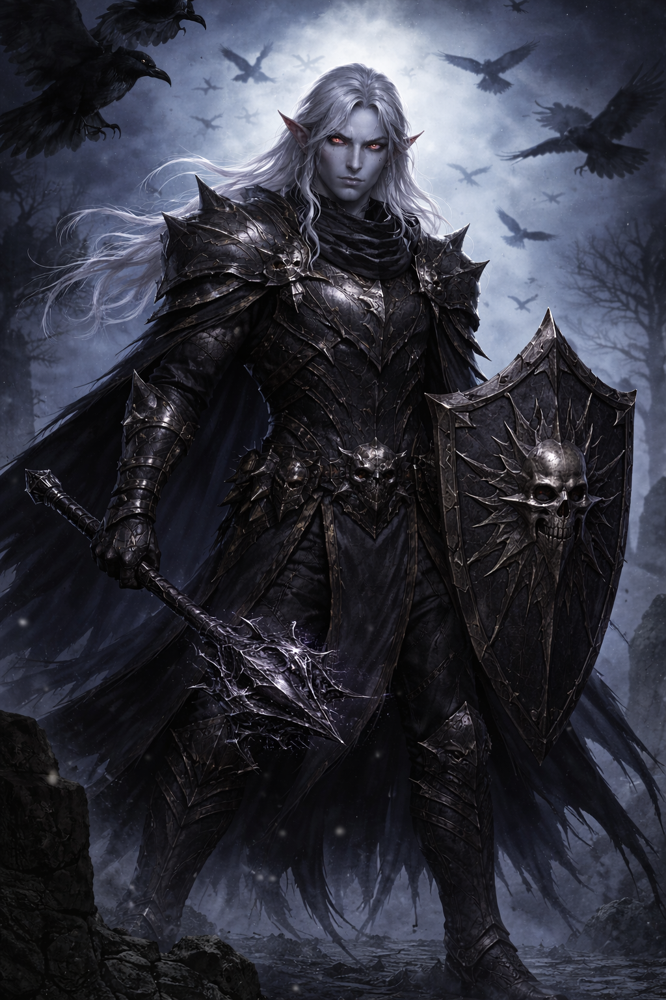

Percival Slightly-Damned

Narodil jsem se v Shadowfellu jako člen rodu Mez’zharyn. Jméno, které mi bylo dáno při zrození, dnes už téměř nikdo nepoužívá. V Řádu i mezi Shadar-Kai mi začali říkat Percival Slightly-Damned nejprve jako posměšnou přezdívku pro někoho, kdo neprojevoval dostatek zoufalství ani víry. Neurazilo mě to. Naopak. To jméno přesně vystihovalo, kým jsem byl: ne zcela ztracený, ale už dávno příliš daleko, než abych se vracel.
Byl jsem odebrán rodině a zasvěcen do Řádu Ztichlé Koruny, paladinského řádu sloužícího Havraní královně. Neučili nás víře, ale metodě. Smrt byla nástroj, paměť měna a slitování považovali za chybu v systému. Přísaha, kterou jsem složil, mi dávala pravomoc rozhodovat, kdy je konec oprávněný a kdy musí být vynucen. Žil jsem tak dlouho podle těchto pravidel, že jsem si nedokázal představit jiný způsob existence. Poslušnost se stala zvykem. A zvyk posedlostí.
Sloužil jsem dobře. Příliš dobře na to, abych si nevšiml, že řád si nepřeje otázky — jen slepé vykonávání rozkazů. Přesto jsem pokračoval, protože systém fungoval a já v něm měl své místo.
Rozkaz zničit Kotvu nářků, artefakt poutající duše vedené bývalým paladinem Zereth Vaelthornem, měl být rutinní záležitostí. Splnění by posílilo řád a vymazalo poslední stopu po něčem, co mělo stále hodnotu. Tehdy jsem ale pochopil, že konce vždy ospravedlňují prostředky — a že tentokrát může být prostředek užitečnější než poslušnost. Nezastavil jsem se z milosrdenství. Zastavil jsem se proto, že ty duše byly využitelné. Cennější než další dokonalý záznam ve jménu Havraní královny.
Tím okamžikem jsem porušil přísahu. Moc nezmizela — pouze se přestala ptát na svolení. Stal jsem se Oathbreakerem, ne šílencem ani monstrem, ale někým, kdo si přivlastnil to, co mu bylo dříve pouze zapůjčeno. Řád Ztichlé Koruny mě označil za anomálii. Můj rod se mě zřekl, aby nebyl zatažen do lovu, který následoval. V Shadowfellu jsem přestal být nástrojem a stal se hrozbou, a tak jsem odešel.
Odchod však nebyl úplný. Někoho jsem tam ztratil. Jméno si nechávám pro sebe, ale jejich tvář se ke mně vrací v opakujících se snech, výčitkách a někdy i ve stínech, které mě sledují příliš dlouho na to, aby šlo o náhodu. Nevím, zda je to duch, vzpomínka, nebo trest — a je mi to jedno. Minulost má stále hodnotu.
Dnes kráčím světem živých jako Percival Slightly-Damned. Nezabíjím z krutosti a nepomáhám z laskavosti. Dělám to, co funguje. Obětuji to, co je třeba. Smrt mi stále slouží, paměť je stále zbraň a Havraní královna... ta se zatím jen dívá. Možná čeká, kdy selžu. Možná počítá, kolik ještě vydržím.
Já počítám jen zisky.